4 Using the Medic Debugger
Debugging with the Medic debugger involves three kinds of programs: source programs, Medic programs (by convention ending with “-medic.rkt”), and a program-starting script. Medic programs represent debugging instructions about the source programs and a program-starting script runs the Medic programs and starts debugging the source programs. After the evaluation of the program-starting script, a debugging graphical interface is presented, which consists of four panes: a Log pane, Graph pane, Aggregate pane and Timeline pane.
4.1 Tracing Log
Showing the context,
Showing the behavior,
Showing the layer of interest.
Suppose the value of x is 3 and we call (log x). Instead of merely printing out the value of x,
it prints out “x = 3”, which displays the extra context information of the value 3—
All traditional print-like expressions are concerned with displaying values of data, but under some debugging circumstances, showing the behavior of data is needed. Consider the following example:
(define (f x y) (+ (sqr x) (sqr y)))
(with-behavior f @{f: @x squared plus @y squared is @ret})
In general, traces become harder to understand with an increase of size and create a need for programmers to be able to focus on only the interesting parts of the trace. The layer Viewer feature of log offers a way to focus on relevant traces while preserving the execution order of traces.
#lang racket (define (find-path t name) (cond [(string? t) (if (equal? t name) '() #f)] [else (let ([left-p (find-path (cadr t) name)]) (if left-p (cons (car t) left-p) (let ([right-p (find-path (caddr t) name)]) (if right-p (cons (car t) right-p) #f))))])) (find-path '("a" ("b" "1" "2") ("c" "3" "4")) "3")
#lang medic (layer left-path (in #:module "find-path.rkt" [at (if left-p _ _) [on-entry (log "left branch: ~a, ~a" (cadr t) left-p)]])) (layer right-path (in #:module "find-path.rkt" [at (if right-p _ _) [on-entry (log "right branch: ~a, ~a" (caddr t) right-p)]]))
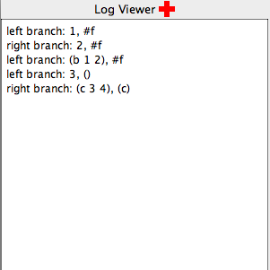
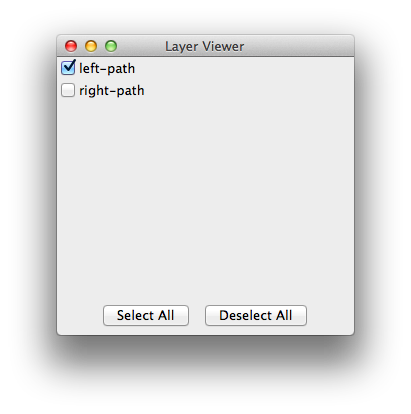
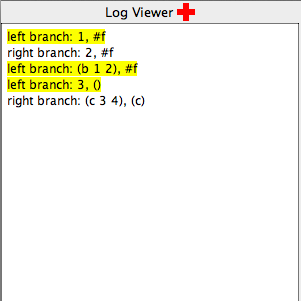
4.2 Tracing Graph
A tracing graph presents a new means of tracing, allowing programmers to visually see the spatial relationship between trace elements. Text-based and linear traces can print out primitive values and preserve the execution order of programs but are limited for values that are reference types or compound data structures, and may exhibit connective relationship. The tracing graph eases the burden of programmers visualizing the spatial relationship mentally or drawing the graph manually on the paper by adding a lot of text-based tracing functions to print out the relationship, which is fundamentally textual and not visual. To avoid any overlap of graph nodes and achieve an aesthetically pleasing visual effect, the tracing graph uses force-directed algorithms for layout.
Here is one example illustrating the effectiveness of tracing graphs to find a bug in programs that is hard to uncover in text-based traces.
Suppose we have a correct implementation of a doubly linked list with support for common accessing, inserting, and removing operations. We comment out line 96 to create a bug.
1 #lang racket 2 3 (define node% 4 (class object% 5 (super-new) 6 (init-field [datum 0]) 7 (field [next #f] 8 [previous #f]))) 9 10 (define doubly-linked-list% 11 (class object% 12 (field [head #f] 13 [tail #f]) 14 (super-new) 15 (define size 0) 16 17 (define/public (initialize d) 18 (set! head (new node% [datum d])) 19 (set! tail head) 20 (set! size 1)) 21 22 (define/public (element-at i) 23 (when (or (> i (sub1 size)) (< i 0)) 24 (error 'element-at-invalid-argument)) 25 (define temp head) 26 (let loop () 27 (when (not (zero? i)) 28 (set! temp (get-field next temp)) 29 (set! i (sub1 i)) 30 (loop))) 31 (get-field datum temp)) 32 33 (define/public (get-size) size) 34 35 (define/public (add d) 36 (cond 37 [(zero? size) (initialize d)] 38 [else 39 (define temp (new node% [datum d])) 40 (set-field! previous temp tail) 41 (set-field! next tail temp) 42 (set! tail temp) 43 (set! size (add1 size))])) 44 45 (define/public (add-at i d) 46 (when (or (< i 0) (> i size)) 47 (error 'add-invalid-arguments)) 48 (if (= i size) 49 (add d) 50 (cond 51 [(zero? i) 52 (define temp (new node% [datum d])) 53 (set-field! next temp head) 54 (set-field! previous head temp) 55 (set! head temp) 56 (set! size (add1 size))] 57 [else 58 (define temp (new node% [datum d])) 59 (define p head) 60 (for ([j (in-range i)]) 61 (set! p (get-field next p))) 62 (set-field! next temp p) 63 (define p-prev (get-field previous p)) 64 (set-field! previous temp p-prev) 65 (set-field! next p-prev temp) 66 (set-field! previous p temp) 67 (set! size (add1 size))]))) 68 69 (define/public (remove i) 70 (when (or (< i 0) (> i (sub1 size))) 71 (error 'remove-invalid-argument)) 72 (cond 73 [(zero? i) 74 (define res (get-field datum head)) 75 (set! head (get-field next head)) 76 (if head 77 (set-field! previous head #f) 78 (set! tail #f)) 79 (set! size (sub1 size)) 80 res] 81 [else 82 (cond 83 [(= i (sub1 size)) 84 (define res (get-field datum tail)) 85 (set! tail (get-field previous tail)) 86 (set-field! next tail #f) 87 (set! size (sub1 size)) 88 res] 89 [else 90 (define temp head) 91 (for ([j (in-range i)]) (set! temp (get-field next temp))) 92 (define res (get-field datum temp)) 93 (define temp-prev (get-field previous temp)) 94 (define temp-next (get-field next temp)) 95 (set-field! next temp-prev temp-next) 96 ;(set-field! previous temp-next temp-prev) 97 (set! size (sub1 size)) 98 res])]))))
#lang medic (layer layer1 (in #:module "doubly-linked-list.rkt" [on-exit (define dlist (new doubly-linked-list%)) ; add ten elements (for ([i (reverse (build-list 10 values))]) (send dlist add-at 0 i)) (for ([i (in-range (send dlist get-size))]) (log "i=~a, datum=~a" i (send dlist element-at i))) ; remove five successive elements starting from the fourth element (for ([i (in-range 5)]) (send dlist remove 3)) (for ([i (in-range (send dlist get-size))]) (log "after removal: i=~a, datum=~a" i (send dlist element-at i)))]))
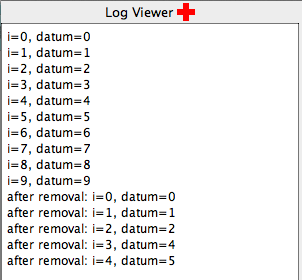
#lang medic ;; disable this layer first (layer layer1 #:enable #f (in #:module "doubly-linked-list.rkt" [on-exit (define dlist (new doubly-linked-list%)) ; add ten elements (for ([i (reverse (build-list 10 values))]) (send dlist add-at 0 i)) (for ([i (in-range (send dlist get-size))]) (log "i=~a, datum=~a" i (send dlist element-at i))) ; remove five successive elements starting from the fourth element (for ([i (in-range 5)]) (send dlist remove 3)) (for ([i (in-range (send dlist get-size))]) (log "after removal: i=~a, datum=~a" i (send dlist element-at i)))])) ;; add a new layer using graph visualization (layer layer2 (in #:module "doubly-linked-list.rkt" [on-exit (define dlist (new doubly-linked-list%)) (for ([i (reverse (build-list 10 values))]) (send dlist add-at 0 i)) (for ([i (in-range 5)]) (send dlist remove 3)) (for/fold ([temp (get-field head dlist)]) ([i (in-range (sub1 (send dlist get-size)))]) (define next (get-field next temp)) ; draw an edge from the current node to its next referencing node with the red arrow color (edge temp next "" "Red" (get-field datum temp) (get-field datum next)) next) (for/fold ([temp (get-field next (get-field head dlist))]) ([i (in-range (sub1 (send dlist get-size)))]) (define prev (get-field previous temp)) ; draw an edge from the current node to its previous referencing node with the default gray arrow color (edge temp prev "" #f (get-field datum temp) (get-field datum prev)) (get-field next temp))]))
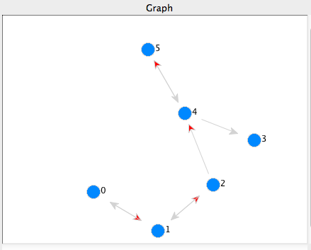
4.3 Aggregate View
The aggregate view tackles the problem of grouping multiple trace elements that may be spatially separated in the source program or are relevant to each other, for example in the same control flow of the program or belonging to the same category of features. Also it supports scrubbing and data comparisons diff.
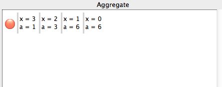
If traces grow overwhelming, we can click on the light-red circle button to the left of the entries and open a scrub view window. The scrub view allows us to focus on values at one step by scrubbing through the traces recorded in the temporal dimension.
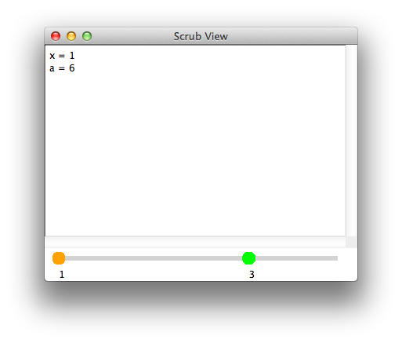
For data comparisons, we can right-click on either of the two slider handles—
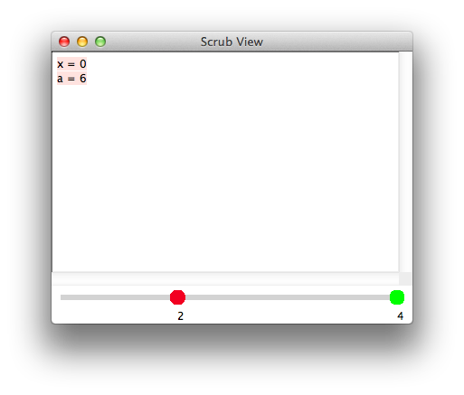
4.4 Timeline View
The timeline view focuses on showing the panorama of individual trace elements. It allows programmers to get an overview of the pattern of changes of values over time at a glance and examine values of interest. The vertical axis of the Timeline pane records each trace element and the horizontal axis represents values of each trace element over time. There is a timeline slider on the top of the Timeline pane. The timeline slider can step through the timeline showing multiple values at the same horizontal coordinates at the same time. Clicking on any timeline square unit pops up a tooltip window showing current individual value.
(timeline v)
If the data types of v over time are all numbers, a line plot is rendered on the timeline. For boolean values, the timeline is composed of colored square units, red denoting false values and blue denoting true values. For other mixed data types, the literal value is displayed.
One example:#lang racket (define (count-length v count) (if (null? v) count (count-length (cdr v) (+ count 1)))) (count-length (cons 8 (cons 9 '())) 0) #lang medic (layer layer1 (in #:module "count.rkt" [(count-length) [on-entry (timeline count) (timeline v) (timeline (null? v))]])) The timeline: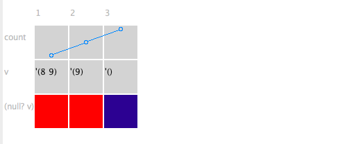
The timeline slider: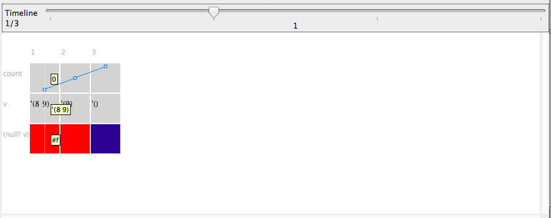
(assert pred)
Asserts pred to be true. If it fails, the square unit corresponding to the failed value is highlighted in red. Other square units remain the default gray background color.
One example:The timeline: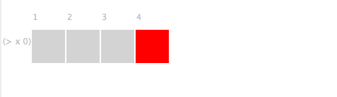
(same? v)
Traditional debuggers are usually only concerned with primitive data values. We define the state of a compund data element as a permutation of possible states of the primitive data members. If programmers want to know whether the state of a compound data changes or not, they need to memorize the previous histories of primitive data members, examine all the current primitive data members at a micro level and make comparisons, which requires a significant amount of debugging effort. The Medic debugger saves the debugging work that programmers have to do mentally and manually by treating the compound data of interest as a unit, the same as the primitive data in the source program, and monitoring value changes at a macro level.
When (same? v) is called for the first time, it always returns true. Aside from the first call, if the current state of v is different from the previous state, the call returns false; otherwise, the value is true. Like (assert pred), only false values are highlighted in red in the timeline.
Here is one debugging example.
#lang racket (define x (vector 1 2 3 4 5)) (define y (list 1 -2 3 4 -5)) (define (convert-to-vector v) (cond [(vector? v) v] [(list? v) (apply vector v)])) (define (make-new-vector v) (vector-set! (convert-to-vector v) 0 #f)) (make-new-vector x) (make-new-vector y) The source program intends to create a new vector based on the original array structures without modifying them. In order to verify that the old array structures remain unchanged, a Medic program with same? is added.#lang medic (layer layer1 (def check-changed #:src (same? x) (same? y)) (in #:module "same.rkt" [(at (define y (list 1 -2 3 4 -5))) [on-exit (ref check-changed)]] [on-exit (ref check-changed)])) In the Timeline pane, we can clearly see that the source program is erroneous, because the value of x is changed.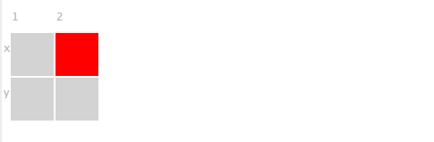